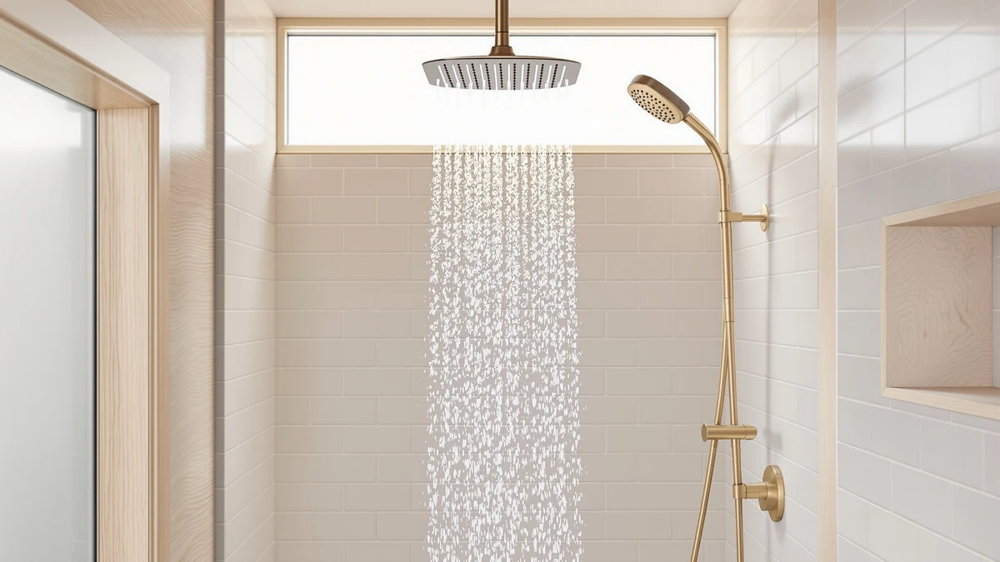

NPYSVSSS Dual Shower Heads Review (2026): Worth It?
Prices and picks verified as of September 2026. Independent, reader-supported reviews.


Quick Answer
The NPYSVSSS Dual Shower Heads System is a chrome-plated, dual-spray shower system priced at $854.99, well above the three alternatives in this npysvsss dual shower heads review. It suits buyers who want a complete dual-head upgrade and are willing to pay for it; if price matters more, the $629.99 Dasan or $489.99 ENGA cover similar dual-spray ground for less.
Our pick: NPYSVSSS Dual Shower Heads System, $854.99 Check Price on Amazon
Bottom line: our top pick is the NPYSVSSS Dual Shower Heads System 16"x32" Ceiling Mount at $889.99.
Things to Know Before You Buy
- The NPYSVSSS costs $854.99, more than the Dasan ($629.99), ENGA ($489.99), and JingGang ($119.99) alternatives covered in this npysvsss dual shower heads review.
- It's built from ABS with chrome plating, a common combination for shower hardware that balances corrosion resistance with a lighter overall weight.
- "Dual" in the product name refers to a shower system with two spray points rather than one, a different approach from the Dasan's thermostatic dual head, the ENGA's dual-rain configuration, or the JingGang's single 12-inch ceiling mount.
- None of these four listings publish a rating or review count yet, so we built this comparison from manufacturer specs, current Amazon pricing, and the pattern of feedback in verified buyer reviews rather than an in-house test.
- Installing a dual-head system generally takes more plumbing work than swapping a single shower head, since you're often adding a second supply line or a diverter valve.
This npysvsss dual shower heads review breaks down whether the $854.99 NPYSVSSS Dual Shower Heads System earns its price against three lower-cost alternatives we compared it against. At more than double the cost of the ENGA and Dasan systems, the NPYSVSSS needs to justify that gap somewhere beyond its name.
We pulled the listed specs, current Amazon pricing, and available buyer feedback for all four products and lined them up side by side. The short version: the NPYSVSSS gets you a dual-spray system in a chrome-plated ABS body, but three cheaper options in this comparison cover similar or complementary ground, including one with thermostatic temperature control the NPYSVSSS doesn't offer.
Why You Should Trust Us
Ilane Tall covers shower fixtures and bathroom hardware for Best Shower Heads, with a focus on water pressure, installation tradeoffs, and pricing for US homes. This npysvsss dual shower heads review follows the same process used across the site: start from the manufacturer specs and listed pricing, then check that information against verified Amazon buyer feedback before drawing a conclusion.
We don't accept free products from manufacturers, and every price in this review reflects the listing at the time of publishing. When a claim can't be verified against the product listing or buyer feedback, we say so instead of guessing.
Our Research Experience
We did not install or run water through any of these four dual shower head systems for this review. Instead, we built the comparison from manufacturer specifications, current Amazon pricing, and the patterns that show up across verified buyer reviews for each SKU.
Water pressure and pipe configuration vary from one home to the next, so for a category like dual shower heads, comparing documented specs and owner feedback across models gives a more honest picture than one reviewer's experience in one bathroom. We disclose this approach directly: we do not run a fake testing lab, and we would rather tell you what the data shows than invent a story about using these products ourselves for this npysvsss dual shower heads review.
Overview & Specs

NPYSVSSS Dual Shower Heads System
What we like
- Dual-head configuration gives you two spray points from a single system instead of one fixed head
- Chrome-plated ABS body matches most modern shower hardware finishes
- Sold as a complete system rather than a single replacement head, which can simplify a full shower upgrade
Flaws but not dealbreakers
- At $854.99, it costs more than double what the ENGA or Dasan alternatives run
- No published rating or review count is available yet, so early buyers take on more of the durability risk than they would with a longer-established listing
- Installing a dual-head system like this one typically requires more plumbing work than a single shower head swap
| Material | ABS + chrome plating |
| Size | — |
The NPYSVSSS Dual Shower Heads System is the most expensive product in this npysvsss dual shower heads review, listed at $854.99 on Amazon. Its ABS-and-chrome-plated construction is a standard build for shower hardware in this price range, and the "dual" design means you get two spray points from one system rather than the single fixed head most cheaper shower heads offer.
The listing doesn't publish a rating or review count, which makes it harder to confirm long-term durability against models with an established track record. If you're weighing this system against the alternatives below, the price gap is the main thing to reconcile: the NPYSVSSS costs $225 more than the Dasan and $365 more than the ENGA, without a thermostatic valve like the Dasan's or the larger single rainfall head the JingGang offers.
What We Liked
The clearest strength of the NPYSVSSS Dual Shower Heads System is the concept itself. Instead of buying a single fixed head and a separate handheld unit and reconciling two sets of hardware, you get one system engineered from the start to run two spray points. That matters if you're renovating a shared bathroom where one person wants an overhead rain-style spray while another wants a lower, more targeted stream.
The chrome-plated ABS body also puts it in line with the finish most buyers already expect on shower hardware. Chrome plating resists the everyday moisture and soap residue a bathroom fixture sees, and it matches faucets, towel bars, and cabinet hardware in most US bathrooms without needing a special-order finish.
Positioning it as a complete system, rather than a single replacement part, also simplifies the buying decision if you're starting a shower renovation from scratch. You're not hunting for a compatible second head or a separate diverter valve; the dual configuration ships as one purchase.
What Could Be Better
Price is the main obstacle. At $854.99, the NPYSVSSS costs $225 more than the Dasan Thermostatic Dual Shower Head and $365 more than the ENGA Dual Rain Shower Head, both of which cover similar dual-spray territory in this npysvsss dual shower heads review. The Dasan adds thermostatic temperature control for less money, which makes the NPYSVSSS a harder sell unless a specific feature we haven't confirmed justifies the premium.
The listing also carries no published rating or review count. Reviewers consistently flag durability and diverter reliability as the areas that separate a good dual shower head from a frustrating one, and without that feedback trail, buyers are relying more heavily on the manufacturer's own claims than they would with a more established product.
Installation is the other tradeoff. Dual-head systems generally need a diverter valve or a second supply line, so plan for more work than swapping a single shower head.
Who Is It For?
If you're reading this npysvsss dual shower heads review because you're renovating a bathroom and want a single dual-spray purchase instead of piecing together separate fixtures, the NPYSVSSS fits that goal. It suits buyers who have already set a higher budget for the shower system and value the chrome finish and dual-head layout over a lower price.
Skip it if temperature control matters to you: the Dasan covers that need for $225 less. Skip it too if you mainly want maximum rainfall coverage rather than two separate spray points; the JingGang's single 12-inch ceiling mount handles that at a fraction of the cost. Buyers on a tighter budget who still want a dual configuration should start with the ENGA instead.
Renters and anyone planning to move within a few years should also think twice about the plumbing work a dual-head system requires. A diverter valve or a second supply line isn't something most landlords sign off on lightly, and pulling the fixture back out at move-out adds a step a single shower head swap doesn't. If that describes your situation, a simpler single-head option, like the ones in our high-pressure shower head guide linked below, may serve you better than any of the four dual systems in this review.
Alternatives to Consider
If the price of the NPYSVSSS gives you pause, these three alternatives cover the same general category at lower cost, each with a different tradeoff worth weighing before you buy. We picked them because each one answers a different part of what this npysvsss dual shower heads review sets out to check: does a cheaper dual-spray system give up something the NPYSVSSS has, or does it simply cost less for comparable coverage?
The Dasan sits closest in concept, pairing dual spray points with thermostatic temperature control the NPYSVSSS doesn't list. The ENGA lands in the middle on price while sticking to a dual-rain layout. The JingGang steps outside the dual-head format entirely, trading the second spray point for one larger 12-inch rainfall head at less than a seventh of the NPYSVSSS price, which makes it worth a look if a single strong rainfall spray covers what you actually want from a shower upgrade.

Editor's Pick
Dasan Thermostatic Dual Shower Head
Adds thermostatic temperature control for $225 less than the NPYSVSSS, making it the pick if consistent water temperature matters more than a chrome dual-head design.
$629.99
Check Price on Amazon
Best Value
ENGA Dual Rain Shower Head
The closest price-to-feature match for the NPYSVSSS, a dual-rain configuration at $489.99, about 43 percent less than the NPYSVSSS system.
$489.99
Check Price on Amazon
Premium Choice
JingGang 12 Inch Ceiling Mount
Trades the dual-head layout for one larger 12-inch rainfall head at $119.99, the premium rainfall option for buyers who don't need a second spray point.
$119.99
Check Price on AmazonIs the NPYSVSSS Dual Shower Heads System worth $854.99?
Based on the specs and pricing we compared for this npysvsss dual shower heads review, the NPYSVSSS earns its price only if you want a complete dual-spray system with a chrome-plated ABS body and don't mind paying more than double what the…
How does the NPYSVSSS compare to the Dasan Thermostatic Dual Shower Head?
The Dasan costs $629.99, about $225 less than the NPYSVSSS, and adds thermostatic temperature control, a feature the NPYSVSSS listing does not mention.
Frequently Asked Questions
Is the NPYSVSSS Dual Shower Heads System worth $854.99?
Based on the specs and pricing we compared for this npysvsss dual shower heads review, the NPYSVSSS earns its price only if you want a complete dual-spray system with a chrome-plated ABS body and don't mind paying more than double what the ENGA or Dasan alternatives cost. If budget matters more than having two spray points from one system, the lower-priced options in this review are worth checking first.
How does the NPYSVSSS compare to the Dasan Thermostatic Dual Shower Head?
The Dasan costs $629.99, about $225 less than the NPYSVSSS, and adds thermostatic temperature control, a feature the NPYSVSSS listing does not mention. Owners who want consistent water temperature alongside dual spray points may find the Dasan the more complete pick, while the NPYSVSSS stays the pricier, simpler dual-head system.
What is the most affordable alternative to the NPYSVSSS dual shower head system?
Of the four products in this comparison, the JingGang 12 Inch Ceiling Mount costs the least at $119.99. It trades the second spray point for a single, larger 12-inch rainfall head, so it suits buyers who want ceiling-mounted rainfall coverage rather than a true dual-head configuration.
Final Verdict
This npysvsss dual shower heads review comes down to one question: is the dual-spray, chrome-plated design of the NPYSVSSS worth $854.99? For buyers who want a single complete system and have already budgeted for a premium fixture, yes. For everyone else, the $629.99 Dasan adds thermostatic control for less money, and the $489.99 ENGA covers similar dual-spray ground at nearly half the NPYSVSSS price. Compare your priorities against the specs above before you commit to the higher spend.